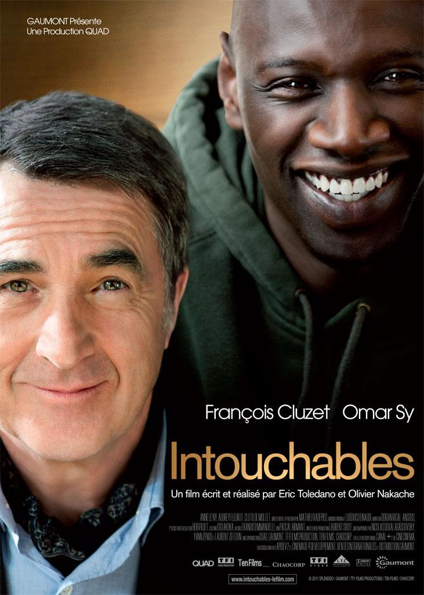

| Director | Año | Duración | País |
|---|---|---|---|
| Olivier Nakache, Eric Toledano | 2011 | 109 min. | Francia |
Philippe, un aristócrata millonario que se ha quedado tetrapléjico a causa de un accidente de parapente, contrata como cuidador a domicilio a Driss, un inmigrante de un barrio marginal recién salido de la cárcel. Aunque, a primera vista, no parece la persona más indicada, los dos acaban logrando que convivan Vivaldi y Earth Wind and Fire, la elocuencia y la hilaridad, los trajes de etiqueta y el chándal. Dos mundos enfrentados que, poco a poco, congenian hasta forjar una amistad tan disparatada, divertida y sólida como inesperada, una relación única en su especie de la que saltan chispas.
Dos personas de mundos muy diferentes: Un rico tetrapléjico y un joven de color de los suburbios. Con esta descripción era muy fácil que la película cayera en clichés y tópicos, pero no es así. El film nos narra la evolución de la amistad de estos dos personajes que está basada en una historia real. Mordaz e irónica. Una historia conmovedora, narrada desde un punto de vista cómico. Unas pocas lágrimas de llanto se entremezclaban con una gran cantidad de las de risa en la cara de los asistentes. Película muy tierna, con una actuación más que memorable de François Cluzet. Es más que difícil trasmitir tanto como lo hizo él, sólo pudiendo usar los gestos de su cara. Por su parte, la sonrisa de Omar nos iluminó durante toda la película y sus comentarios totalmente incorrectos nos hicieron reír a carcajadas. ¿ La mejor escena? A juzgar por la risa unísona y el interminable aplauso del público, sin lugar a dudas, la escena de la de la ópera alemana.